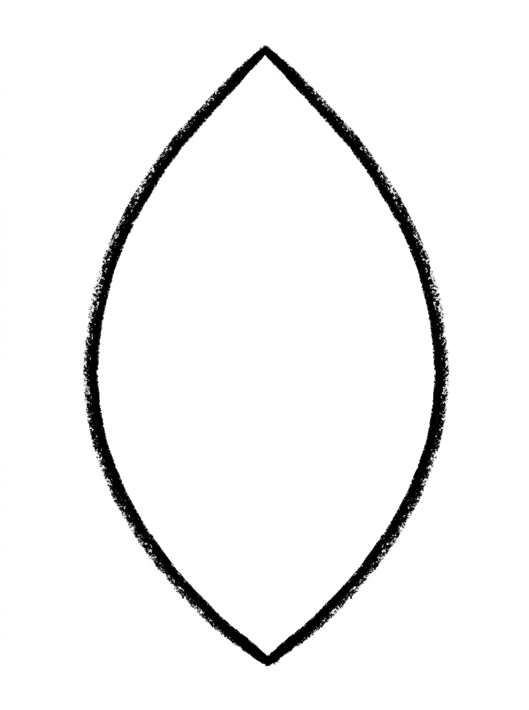
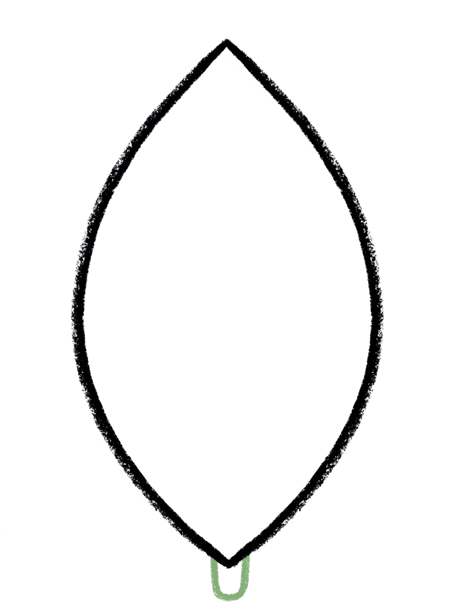
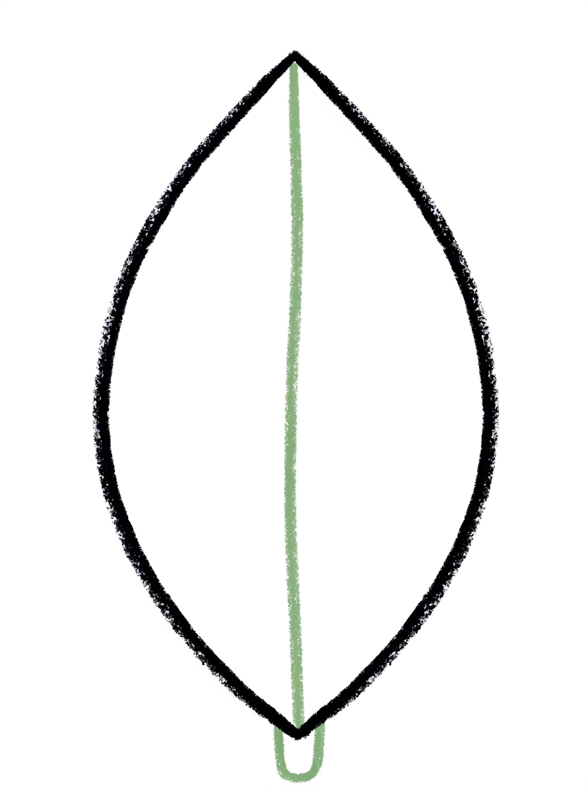
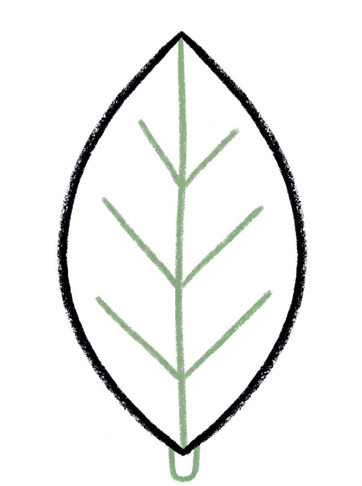
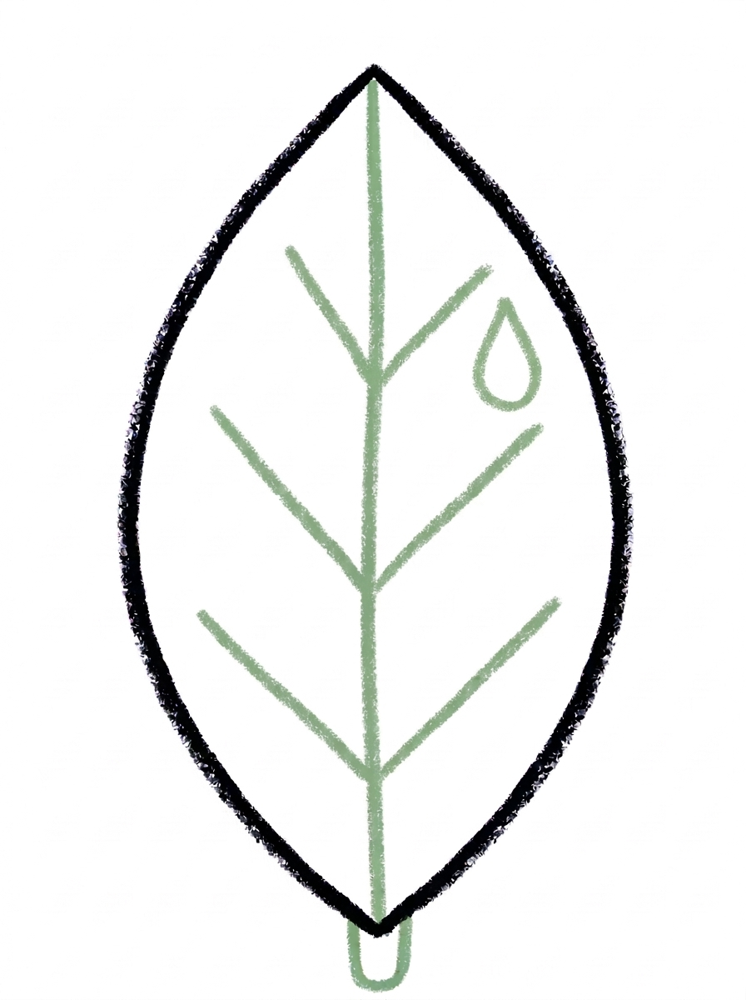

Leaf Drawing for Kids How to Draw A Leaf in 6 Easy Steps
Quick Answer
Draw one big pointed oval for the leaf, add a short stem, then one straight center vein and six slanted side veins. Finish with a small teardrop dew drop inside the leaf, then colour it green with a brown stem. Made for ages 3 and up — no signup needed, just print and draw.
At a Glance
- Subject: How to draw a leaf
- Ages: 3+
- Steps: 6 steps
- Time: ~15 min
- Difficulty: Easy
- Supplies: Paper, crayons
A leaf is one of the friendliest first nature drawings: one big pointed oval does most of the work, and the veins inside are just straight lines. Kids love that a few simple lines turn a plain oval into a leaf that looks real — and the same steps work for spring green or fall colours.
✏️ Draw Your Leaf in 6 Easy Steps
One step per box — this step by step leaf drawing shows each new part in a different color so kids can see exactly what changed.
Step 1: The Leaf

Draw one big pointed oval in the middle of your paper — a leaf shape with a point at the top and a point at the bottom.
Step 2: The Stem

Draw one short thick line at the bottom point of the leaf, touching the point and pointing down. This is the leaf's stem.
Step 3: The Center Vein

Draw one straight line down the center of the leaf, from the top point to the bottom point, staying inside the leaf. This is the center vein.
Step 4: The Side Veins

Draw six short slanted lines inside the leaf — three on each side of the center vein. Each one touches the center vein and angles up toward the leaf's edge.
Step 5: The Dew Drop

Draw one small teardrop shape on the upper right area of the leaf, staying inside the leaf. This is a drop of dew.
Step 6: Color It In

Color your leaf! Bright green for the leaf, dark green for the center vein and side veins, brown for the stem, and pale blue for the dew drop. Great drawing!
📊 Leaf Drawing by Age
Every age can join in — just adjust the job.
| Age | What they can do | Tip |
|---|---|---|
| 3-4 | Draw the big pointed oval leaf shape and the straight center vein line. | The two points are the hard part — show them how the oval comes to a gentle point, like a smile curving up to meet at the top. |
| 4-5 | Add the stem and all six slanted side veins, three on each side. | Count the veins together as they draw — three left, three right — and remind them each one starts on the center vein. |
| 6+ | Draw the whole leaf including the teardrop dew drop, and shade the veins in dark green. | Challenge them to draw a second leaf in fall colours next to the green one, using the exact same steps. |
🖨️ Download Your Free Leaf Drawing Printable
The printable lays out all 6 steps one per box, big enough for little hands — kids draw right alongside each step.
⬇️ Open Free Printable 🖨️ Print🎁 Free printable for ages 3+
🍃 Leaf Rubbing Match-Up
Take the finished drawing outside and go on a leaf hunt: find a real leaf that matches the drawing's shape, place it under a fresh sheet of paper, and rub over it with the side of a crayon. Compare the rubbing's veins with the six side veins and center vein your child drew — real leaves show the same pattern, which makes the drawing feel like a real discovery.
What You'll Need to Draw A Leaf
You need paper, a pencil and crayons or markers. For the colours in Step 6, keep bright green for the leaf, dark green for the center vein and side veins, brown for the stem, and pale blue for the dew drop. Fall colours — orange, red and yellow — work beautifully too if your child wants an autumn version.
What They're Learning
This tutorial practices the pointed oval — an oval that comes to a point at both ends — plus straight-line control for the center vein and slanted lines for the side veins. Kids also practice symmetry (three veins on each side), counting to six, and drawing a teardrop for the dew drop, all while learning the real parts of a leaf: stem, veins and blade.
Make It Yours
Once the leaf is drawn, vary it: colour it orange, red or yellow for fall; draw three leaves on one stem like a sprig; make it a long willow leaf by stretching the pointed oval; or skip the dew drop and dot in a tiny ladybug sitting on the leaf instead.
🛒 Our Favorite Drawing Supplies
These are the supplies we reach for in our own home — washable (because kids), quality paper, and enough colors to avoid fights.
As an Amazon Associate, MomYouNeedThis earns from qualifying purchases — at no extra cost to you.
💡 Leaf Drawing Tips for Parents
Step 4 is the step that makes the leaf look real, and the common slip is angling the side veins downward or starting them at the leaf's edge. Point out that every side vein starts on the center vein and leans up toward the edge, like the branches of a tiny tree lying down.
If the center vein wanders off-center, do not erase — a slightly crooked vein still looks like a real leaf, because real leaves are not perfect either. Save the perfection talk for the counting: three veins per side is an easy win to praise specifically.
✏️ Leaf Drawing Step by Step
This leaf drawing is built from the outside in: the leaf shape first, the stem second, and then all the inside lines — center vein, side veins and the little dew drop — before any colour. That order means the hardest shape happens on a clean page, and everything after it is straight or slanted lines inside a shape that is already there.
Follow the printable one step at a time and let your child compare their leaf to the picture after each step. The drawing is forgiving: a wider leaf, a narrower leaf or a slightly bent stem all still look like a leaf.
The colour step is where it comes alive. Bright green with darker green veins looks fresh and spring-like, and the pale blue dew drop gives kids one small detail to feel proud of.
See free leaf printable for more.
✏️ One Shape Per Step, Six Steps Total
The order is simple enough for a preschooler to say out loud: Step 1, the big pointed oval leaf. Step 2, one short thick stem at the bottom point. Step 3, one straight center vein from the top point to the bottom point.
Step 4 adds six short slanted side veins — three on each side of the center vein, each one touching the center vein and angling up. Step 5 is one small teardrop dew drop in the upper right of the leaf. Step 6 colours it all in.
Notice that five of the six steps are a single shape or a single set of matching lines. That is what makes this a genuine first drawing tutorial: your child is never asked to hold more than one new idea at a time.
See free leaf printable for more.
🍃 Fall Leaf Drawing
The same six steps make a perfect fall leaf drawing — just change the colours in Step 6. Orange, red, gold or a mix of all three on one leaf gives that autumn look, and the brown stem already fits the season.
For a fall display, draw the leaf several times in different autumn colours, cut them out, and string them into a garland or stick them on a window. Kids love seeing their own leaves 'fall' across the glass.
Pair it with a nature walk: collect real fallen leaves, bring them home, and compare their shapes and veins with the drawing. The pointed oval and center vein in this tutorial match most common leaves children pick up.
See free leaf printable for more.
❓ Leaf Drawing FAQs
What is the easiest way to draw a leaf?
Start with one big pointed oval, then add a stem, one straight line down the center for the vein, and three short slanted lines on each side. Those simple shapes are the whole leaf — this tutorial walks through them in six steps.
What age is this leaf drawing for?
It is made for ages 3 and up. Younger children can draw the leaf shape and center vein, while older kids add all six side veins, the dew drop and the two-tone colouring on their own.
What supplies do we need to draw a leaf?
Paper, a pencil and crayons or markers are all you need. For Step 6, have bright green, dark green, brown and pale blue ready — or orange, red and yellow for a fall leaf.
Is the leaf drawing printable really free?
Yes — every printable on MomYouNeedThis is 100% free to download and print. No signup, no payment, just tap the download button.
How do I print the leaf drawing tutorial?
Open the PDF and print at 100% scale, not 'fit to page', so the six step pictures print at their designed size. Your child can keep the sheet beside their paper and copy one step at a time.
How do I make this a fall leaf instead of a green leaf?
Follow the exact same steps and only change Step 6: colour the leaf orange, red or gold, keep the stem brown, and use a slightly darker shade of the same colour for the veins. The shape works for every season.
Why do the side veins angle upward?
That is how real leaves grow — the side veins run from the center vein out and up toward the edges, carrying water to the whole leaf. Angling them up is the small detail that makes a child's leaf look real instead of like a feather.
Can my child skip the dew drop?
Of course. The dew drop in Step 5 is a decoration, not a part of the leaf, so the drawing is complete without it. Some kids prefer to add a tiny bug or a second small leaf there instead.
📚 Keep Exploring
- ✏️ All 53 Drawing Tutorials 53 free step-by-step drawing tutorials for kids.
- 🍂 Fall Coloring Free printable fall coloring pages for kids.
- ✏️ Drawing Practice Free printable drawing pre-writing worksheet for toddlers.